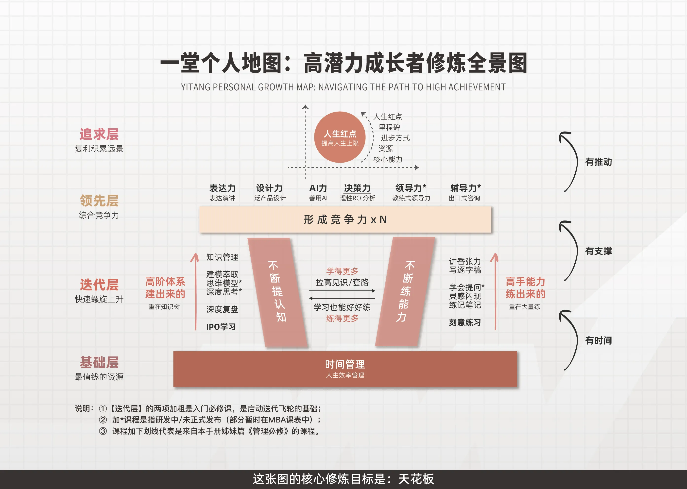

web3-learn 教程 · 五步法 · STEP 01
STEP 01 · 问题范围
收窄到能赢的战场
听声辨瓜的前提是你得先知道自己在挑什么瓜。这一领域原本包含前端、多链、合约、安全四个大方向，12 周全吃掉只会样样不深。这里做了明确的取舍。
纳入与排除
明确写出"做什么"与"不做什么"，并把它们贴在仓库首页作为 12 周内的裁判。
纳入范围（必须练到极致）
- Go 语言与后端工程（并发 / RPC / 数据库）
- EVM 链上交互（ethclient / 交易 / 事件 / 重组）
- 资金安全（热冷分离 / 幂等 / 对账）
- 合约读写（Solidity + Foundry + OpenZeppelin）
主动排除（记录即产出）
- React / Vue 前端（用现成面板，不自建）
- Solana / Substrate 等非 EVM 链
- 算法竞赛与刷题（不考这个）
- Layer2 源码级深挖（只做接口层了解）
范围声明
写出一句话的范围声明，必须同时包含「做什么」与「不做什么」，贴在仓库首页。
「12 周内，我用 Go 把 EVM 链上的充值/提现做到生产可用，并把资金安全做到能被审计；不碰前端、不碰非 EVM 链。」
这句话是 12 周内所有取舍的裁判——读不进这一句的人，方法论学了也白学。

验收清单
- 我能用一句话说清 12 周内"做什么"
- 我能用同一句话说清"不做什么"
- 这句话已经写在仓库 README 顶部
- 主动排除项至少有 2 项，且都有"为什么排除"的备注